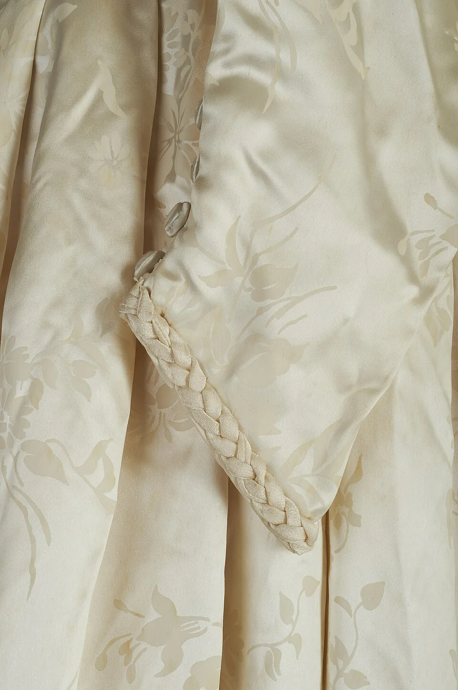

自助婚紗
從拍攝風格、場景到妝髮方向，先整理喜歡的畫面與預計檔期。
Your day, in your own way
從自助婚紗、手工禮服到婚禮紀錄，把分散的靈感與服務整理成一條清楚的籌備路徑。
服務內容依品牌 Facebook 公開資訊整理，實際方案與檔期以品牌確認為準。

Wedding services
不用在貼文與訊息之間反覆尋找。網站先把服務情境、組合方式與下一步說清楚，讓新人帶著方向開始諮詢。
從拍攝風格、場景到妝髮方向，先整理喜歡的畫面與預計檔期。
用輪廓、材質與場合分類禮服，讓試穿前就能建立清楚偏好。
攝影、錄影與微電影集中比較，保留儀式與宴客中真正重要的片刻。
依婚禮流程與造型數討論妝髮，讓整天節奏更從容。
從流程、布置到樂團，把各環節放進同一份籌備輪廓。
以需求與優先順序理解組合，不在一開始被大量項目淹沒。
A thoughtful beginning
用作品風格、服務比較與需求表單承接第一輪問題，讓到店或線上諮詢直接從真正重要的期待開始。
「先看見方向，再一起完成屬於你們的那一天。」
Simple process
概念流程可在正式網站串接品牌既有的 Facebook、Email、LINE 或預約方式。
婚紗、禮服、紀錄或整體企劃。
日期、地點與喜歡的風格方向。
由團隊回覆可配合時段與下一步。
依需求整理方案與執行細節。
Start your story
這個表單只示範網站可以如何整理第一輪需求；目前不會送出或保存任何內容。